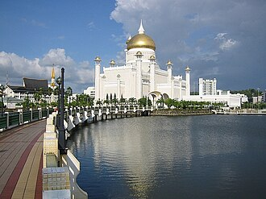

概要
La mosquée Omar Ali Saifuddin est une mosquée située à Bandar Seri Begawan, capitale du sultanat de Brunei. Achevée en 1958, elle porte le nom d'Omar Ali Saifuddien III, 28e sultan de Brunei.
مسجد السلطان عمر علي سيف الدين مسجد ملكي يقع في بندر سري بكاوان، عاصمة سلطنة بروناي. تم بناءه في عام 1958. ويصنف بأنه المسجد الأول من حيث الطراز المعماري في منطقة آسيا والمحيط الهندي، والأكثر جذباًً للسياحة، وهو من المعالم المميزة لسلطنة بروناي.. يعتبر المسجد من الرموز الإسلامية في بروناي، ويقع في العاصمة بندر سري بيكوان. وتم الانتهاء من بنائه عام 1958، ويعتبر أحد نماذج العمارة الإسلامية الحديثة.
The Omar Ali Saifuddien Mosque. or unofficially Sultan Omar Ali Saifuddin Mosque, is a mosque in Bandar Seri Begawan, the capital of Brunei. It is one of the two state mosques, the other being Jame' Asr Hassanil Bolkiah Mosque. One of the biggest and most striking mosques in the Far East, it was completed in 1958 at a cost of US$5 million, built by the eponymous Omar Ali Saifuddien III, the 28th Sultan of Brunei.
Sultan Ömer Ali Seyfeddin Camii. Brunei Sultanlığı'nın başkenti Bandar Seri Begawan'da 28. Brunei Sultanı tarafından 1958 yılından inşa ettirilen cami.
Masjid Sultan Omar Ali Saifuddin, adalah sebuah masjid di Bandar Seri Begawan, ibu kota Brunei Darussalam. Masjid ini merupakan salah satu dari dua masjid negara, yang lainnya adalah Masjid 'Asr Hassanil Bolkiah. Salah satu masjid terbesar dan paling mencolok di Timur Jauh, masjid ini selesai dibangun pada tahun 1958 dengan biaya US$ 5 juta, dibangun oleh Omar Ali Saifuddien III, Sultan Brunei ke-28.
سلطان عمر علی سیف الدین مسجد سلطنت برونائی کے دار الحکومت بندری سری بیگوان میں واقع شاہی مسجد ہے۔ یہ خطۂ ایشیا بحر الکاہل کی خوبصورت ترین مساجد اور ملک کے معروف سیاحتی مقامات میں سے ایک ہے۔ یہ مسجد برونائی کی پہچان سمجھی جاتی ہے۔
Die Moschee Sultan Omar Ali Saifuddin ist eine königliche Moschee in der Hauptstadt von Brunei, Bandar Seri Begawan. Sie gilt als eine der schönsten und eindrucksvollsten Moscheen des asiatisch-pazifischen Raumes, ein Wahrzeichen der Stadt und des ganzen Landes und als Touristenattraktion. Die Moschee ist nach dem 28. Sultan von Brunei, Omar Ali Saifuddin III., benannt und wird als höchstes Symbol des islamischen Glaubens in Brunei angesehen. Das Gebäude wurde 1958 fertiggestellt.
La mezquita del Sultán Omar Ali Saifuddien es una mezquita islámica situada en Bandar Seri Begawan, capital del sultanato de Brunéi. Es considerada una de las mezquitas más llamativas de Asia-Pacífico y un importante monumento y atracción turística de Brunéi.
La moschea Omar Ali Saifuddien è una moschea reale di Bandar Seri Begawan, capitale del Brunei.
A Grande Mesquita do Sultão Omar Ali Saifuddin é uma mesquita real islâmica localizada em Bandar Seri Begawan, a capital do sultanado de Brunei. A mesquita é classificada como uma das mais espetaculares mesquitas da Ásia Pacífica e uma grande atração turística.
De Sultan Omar Ali Saifuddin-moskee is de koninklijke moskee van het islamitische koninkrijk Brunei. Het gebouw bevindt zich in de hoofdstad Bandar Seri Begawan en geldt als oriëntatiepunt van de stad en het hele land. De moskee wordt gezien als een van de mooiste en indrukwekkendste van Pacifisch Azië en vormt een van de grootste toeristische trekpleisters van Brunei.
奧瑪阿里賽夫汀回教堂 是汶萊境內的一座伊斯蘭教皇家清真寺，位於首都斯里巴加灣，不僅被汶萊民眾視作國家地標，更被建築學界公認為亞太地區最具特色的清真寺，亦是東南亞觀光景點及主要名勝之一。
スルターン・オマール・アリ・サイフディーン・モスクは、ブルネイの首都バンダルスリブガワンにある王立モスクの一つ。同モスクは、アジア太平洋と主な観光名所で最も素晴らしいモスクのうちの1つと分類されている。このため、ブルネイの人々にとって一つの誇りにもなっている。通称オールドモスク。日本では単純にオマール・アリ・サイフディン・モスクと紹介されていることも多い。
오마르 알리 사이푸딘 모스크(말레이어: Masjid Omar Ali Saifuddien)는 브루나이 반다르스리브가완에 있는 모스크이다. 이 모스크는 브루나이의 가장 크고 오래된 모스크 중 하나이며, 브루나이의 28대 술탄이자 현재 군주인 하사날 볼키아 술탄의 아버지인 오마르 알리 사이푸딘 3세 (1914~1986)의 이름을 따서 명명된 것이다. 이 모스크는 브루나이의 이슬람 신앙을 상징하는 역할을 하고 있다.
उमर अली सैफुद्दीन मस्जिद ब्रुनेई की राजधानी बंदर सेरी बेगवान में स्थित एक इस्लामी मस्जिद है। इसे अक्सर एशिया प्रशांत में सबसे खूबसूरत मस्जिदों में से एक माना जाता है। यह मुस्लिम समुदाय के लिए इबादत गाह, एक प्रमुख ऐतिहासिक स्थल और ब्रुनेई का एक प्रसिद्ध पर्यटक आकर्षण है।
Мечеть Омара Али Сайфуддина — королевская мечеть, расположенная в Бандар-Сери-Бегаване, в столице Султаната Бруней. Мечеть можно классифицировать как одну из самых захватывающих мечетей в Азиатско-Тихоокеанском регионе и главной достопримечательности Брунея.
Nhà thờ Hồi giáo Sultan Omar Ali Saifuddin là một nhà thờ Hồi giáo hoàng gia ở thủ đô Bandar Seri Begawan, của vương quốc Hồi giáo Brunei. Đây là một trong những nhà thờ Hồi giáo đẹp nhất ở khu vực châu Á Thái Bình Dương, là một điểm thu hút du khách tham quan ở thành phố cũng như quốc gia này.
มัสยิดโอมาร์ อาลี ไซฟุดดีน เป็นมัสยิดในบันดาร์เซอรีเบอกาวัน เมืองหลวงของประเทศบรูไน ซึ่งถูกตั้งชื่อตามพระนามของสุลต่านโอมาร์ อาลี ไซฟุดดีนที่ 3 สุลต่านองค์ที่ 28 ของบรูไน ผู้ทรงริเริ่มการก่อสร้างนี้
Ang Masjid Sultan Omar Ali Saifuddin o Moske ng Sultan Omar Ali Saifuddin ay ang masjid o moske na nasa Bandar Seri Begawan, ang kabesera o punungbayan ng Kasultanan ng Brunei Darussalam.
Sultan Omar Ali Saifuddin-moskén är en kunglig islamisk moské som stod klar 1958, belägen i Bandar Seri Begawan, huvudstaden i sultanatet Brunei. Moskén klassas som en av de mest spektakulära och vackra moskéerna i Asien och är en stor turistattraktion. Sultan Omar Ali Saifuddin-moskén anses bland folket i Brunei vara landets största landsmärke. Moskéns arkitektur har influerats både av islamiska och italienska stilar. Moskén är namngiven efter Omar Ali Saifuddin III, den 28:e sultanen av Brunei. Moskén är byggd vid en konstgjord lagun. Den är omgiven av träd och blomsterträdgårdar. I lagunen finns också ett skepp som används för officiella ceremonier.
地図上の位置
資料とリンク
- Wikipédia — Français
- Wikipédia — العربية
- Wikipédia — English
- Wikipédia — Türkçe
- Wikipédia — Bahasa Indonesia
- Wikipédia — اردو
- Wikipédia — Deutsch
- Wikipédia — Español
- Wikipédia — Italiano
- Wikipédia — Português
- Wikipédia — Nederlands
- Wikipédia — 中文
- Wikipédia — 日本語
- Wikipédia — 한국어
- Wikipédia — हिन्दी
- Wikipédia — Русский
- Wikipédia — Tiếng Việt
- Wikipédia — ไทย
- Wikipédia — Filipino
- Wikipédia — Svenska
- Wikidata — Q842921
データ：ウィキデータ（CC0）、3か月ごとに更新。年は、その建物について知られている最も古い建設年です。のちにモスクになった建物（アヤソフィアなど）の場合は、元の建物の建設年です。写真：ウィキメディア・コモンズ。作者とライセンスは各写真のページにあります。